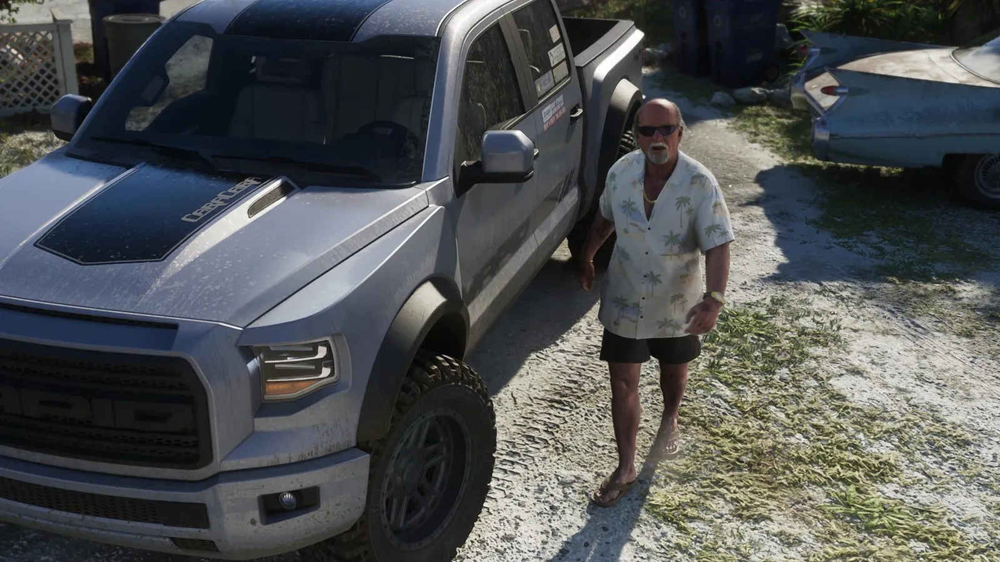
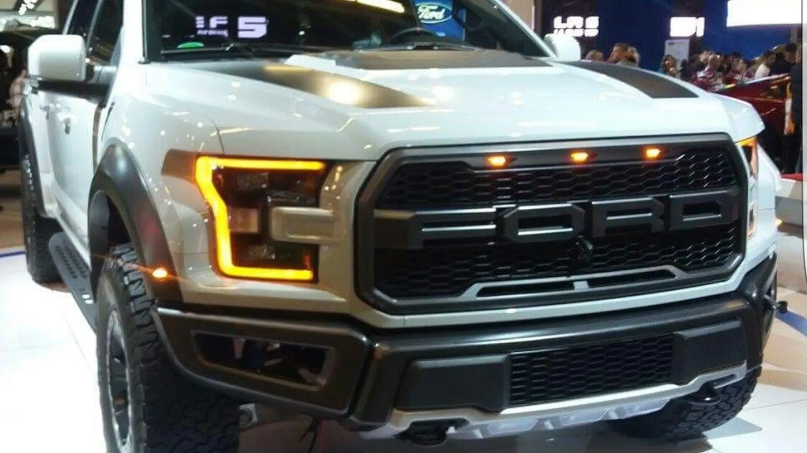
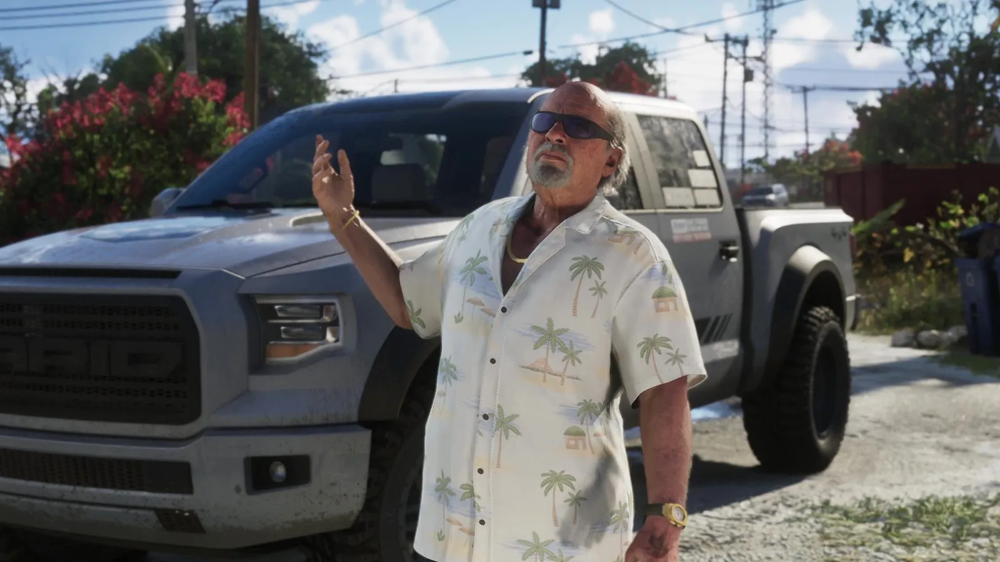

Пикап Брайана и Ford F-150 Raptor
Опубликовано:
Решётка с крупными буквами, широкие крылья, вырезы на капоте и внедорожные шины — это Ford F-150 Raptor. Но марка в игре своя — Vapid, а на капоте написано «Caracara».


- Во втором трейлере Брайан Хедер стоит у серого пикапа во дворе своего дома в Кис.
- Решётка с крупными буквами VAPID повторяет решётку Raptor с буквами FORD.
- Vapid — давняя марка-пародия на Ford в серии GTA.
- Raptor второго поколения (с 2017 года) — алюминиевый кузов и битурбо V6 на 450 л. с.
Что в игре
Второй трейлер: Брайан Хедер в гавайской рубашке и шлёпанцах выходит во двор, где стоит серый пикап. Машина грязная, но мощная: широкие пластиковые расширители арок, внедорожные шины, вырезы-воздухозаборники на капоте и чёрная полоса с надписью CARACARA. На решётке крупными буквами — VAPID. Рядом ржавеет старый кадиллак с «плавниками».

Что в реальности
Ford F-150 Raptor — заводская внедорожная версия самого продаваемого пикапа США. Его задумали как дорожную версию гоночных трофи-траков для пустынных гонок вроде «Баха 1000»: длинноходная подвеска с амортизаторами Fox Racing, широкая колея, вездеходные шины. Первое поколение (SVT Raptor) выпускали в 2010–2014 годах. Второе вышло в 2017-м: алюминиевый кузов и 3,5-литровый битурбо V6 EcoBoost на 450 л. с. Третье поколение показали в феврале 2021 года.
Rockstar сохранила даже идею названия. «Raptor» по-английски — хищная птица (и велоцираптор), а каракара — хищная птица из семейства соколиных. Хохлатая каракара живёт во Флориде, и её флоридская популяция охраняется законом США об исчезающих видах. Совпадение «птица на птицу» — наша трактовка, Rockstar его не объясняла.
Совпадает и отличается
| Ford F-150 Raptor | Пикап в GTA 6 | |
|---|---|---|
| Решётка с крупными буквами марки | FORD | 🟡 VAPID |
| Широкие расширители арок | Да | 🟢 Да |
| Вырезы на капоте | Да | 🟢 Да |
| Внедорожные шины | Да | 🟢 Да |
| Название модели | Raptor | 🟡 Caracara |
Источники: Rockstar Games (трейлер 2 GTA 6); Ford Motor Company — история F-150 Raptor; U.S. Fish and Wildlife Service — Audubon's crested caracara.
Реальные фото: Фото: Bull-Doser, Public domain · Wikimedia Commons. Кадры игры: Rockstar Games.
Каждый день — одно сравнение: кадр игры рядом с реальным фото. Подписывайтесь:
YouTubeInstagramTikTok
 vs
vs
 vs
vs
 vs
vs